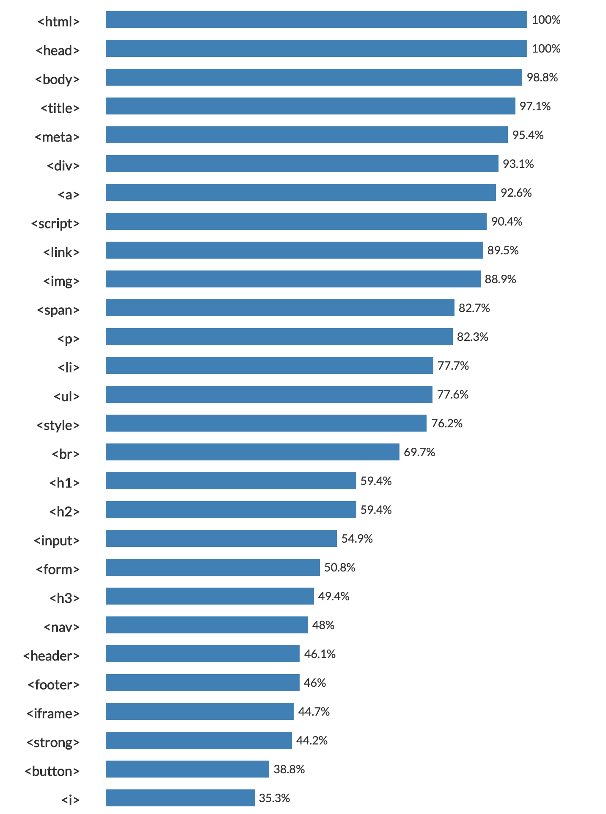
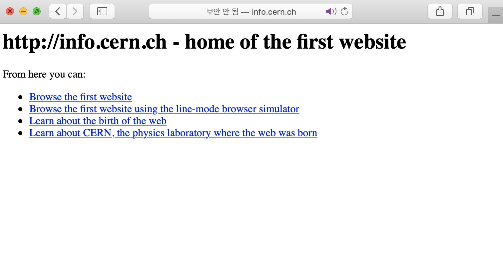

HTML♥
CSS♥
JavaScript♥
Design♥
Disney♥

HTML Study Note
A. HTML코딩과 실습환경 준비
* 생활코딩 추천 편집기 : 아톰
* 추천검색어 : HTML Editor /Best HTML Editor 2020
B. TAG
* strong
* u
* h1~h6
* br
* meta charset="utf-8"
* P
* p style="margin-top:60px;"
C. 통계를 기반으로한 학습
* HTML 자주 사용되는 태그 순위

D. Html이 중요한 이유
* HTML을 기반으로 한 웹상에서는 HTML의 태그가 검색엔진의 우위를 차지 한다.(노출up)
* 문자를 이미지로 디자인해서 올린다면 검색엔진에서는 존재하지 않는것이 된다.
* 웹은 공공재= 개방성 =접근성
E. 문법속성&이미지(img)
* 언플레시(무료 이미지 사이트)
* img src="스터디" width="100%”
F. 부모, 자식관계의 태그 - 목록
* ol, li -넘버로 목록표시
* ul, li -구분점으로 목록표시
G. 문서의 구조와 슈퍼스타들
* !doctype html
* html
* head - 명령어
* _title Mungeeharu title
* _meta charset="utf-8"
* body - 본문
H. 태그의 제왕
* 최고의 검색을 가능하게 했다.
* 도시의 길과 인체의 혈관과 같은 기능
* Hyper Text Markup Language 의 첫글자
* Hyper Text를 의미가는 'a' ancer 정박하다.(정보의 바다에 정박하다.) = 링크
* a href=링크>링크할 개체
I. 웹의 기원
* 웹의 메소포타미아
